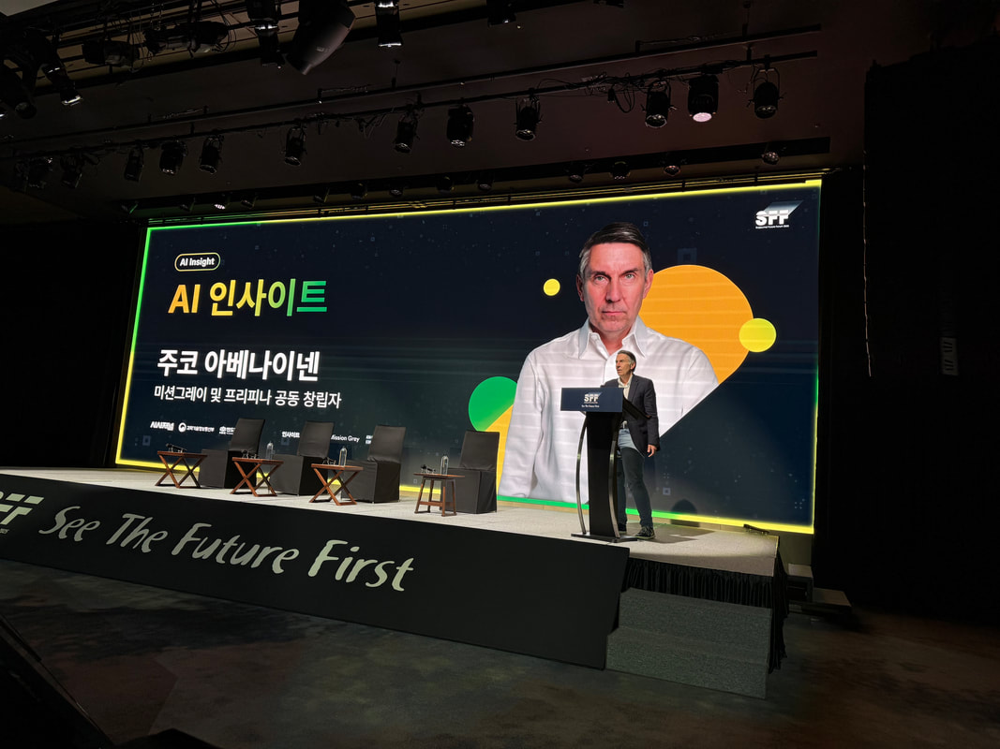

Geopolitics
Asia’s Geopolitical Risks Are Everyone’s Business Now; Lessons from Asia
Across my discussions, a striking theme emerged: trust in US security guarantees is fading fast. A Singapore-based geopolitical expert told me simply: “We don’t even debate anymore whether the US is a reliable partner. We know it isn’t.”

Over the past two weeks, I traveled across Asia, visiting South Korea, Malaysia, and Singapore, and meeting people from many other countries, including India. What I heard again and again, whether from military experts, investors, or business leaders, is that the global security landscape is now deeply unstable. And unlike in the past, this is no longer something only governments or defense experts need to monitor. It is critical that companies and investors everywhere, also in Europe and the USA, start paying close attention.
There are three big reasons why:
- Asia’s flashpoints could trigger economic shockwaves worldwide.
- Military technologies and alliances are shifting fast, with business implications.
- Trust in traditional security guarantees is eroding, raising new risks and opportunities.
But here’s the core message I took from my trip: you need reliable, real-time information to understand this new world. We no longer live in an era where you can rely on the assumptions of yesterday or simple models of friends vs. enemies. The risks today are dynamic, multi-dimensional and deeply connected, and many Western companies are still unprepared.
AI, Defense, and Shifting Alliances: Insights from Seoul
I spoke at an event in Seoul that focused on AI, but security, defense, and geopolitics were key themes too with participants from Korea’s military, Ministry of Defense, universities, and global companies like Palantir and Shield AI. AI is becoming essential in two areas of defense: Intelligence and decision-making: analyzing massive volumes of data, supporting faster responses, enabling more informed leadership. Autonomous systems: from drones to electronic warfare tools that must operate even when communications are jammed. Swarm intelligence is advancing rapidly and will reshape future battlefields.
One Singapore-based investor, originally from India, told me bluntly: “Show me every defense or dual-use startup you know, we need them now here.” Demand for innovation in these areas is exploding, driven by rising tensions across Asia.
Real Flashpoints, Real Risks
Korea remains a major point of concern. I was struck by how integrated the US military presence there has now become with potential Taiwan scenarios. If conflict breaks out over Taiwan, US forces in South Korea will be involved, which in turn makes the Korean Peninsula even more volatile.
Meanwhile, North Korea’s nuclear program continues to advance, with deeper ties to Russia and China. Inside South Korea, public support for developing its own nuclear deterrent is now over 70%.
But perhaps the biggest uncertainties I heard discussed were around Taiwan. Nobody I spoke with claimed to know the probability of a full Chinese attack. But what many highlighted is this: the most likely risks are not full invasion, but blockades, cyberattacks, and “grey zone” coercion. These can still cripple global supply chains, especially in semiconductors, without open war.
India-Pakistan is another hot zone. Recent terror attacks in Kashmir and subsequent missile and drone exchanges have worsened tensions. Both sides are nuclear-armed. Indian analysts I met pointed out that India increasingly sees China, not Pakistan, as the primary threat, but the risk of escalation with Pakistan remains high, especially given the modernization of Pakistan’s nuclear capabilities (supported by China).
Thailand and Southeast Asia are also under strain, though less visibly. ASEAN countries are hedging, buying arms and building new partnerships, but are still fragmented. One area of rising interest: military technology cooperation with Europe, especially as trust in US consistency wavers.
The Erosion of US Guarantees
Across my discussions, a striking theme emerged: trust in US security guarantees is fading fast. A Singapore-based geopolitical expert told me simply: “We don’t even debate anymore whether the US is a reliable partner. We know it isn’t.”
The US still plays a key role, witness its statements at the recent Shangri-La Dialogue in Singapore, promising continued engagement in Asia-Pacific. But actions often speak louder than words, and many Asian leaders and investors now see US foreign policy as too volatile and inward-focused. This is driving new thinking:
Some countries are considering indigenous nuclear capabilities. Others are pursuing new alliances; Japan, South Korea, and Taiwan among them. Business leaders are adjusting investment strategies accordingly.
Europe’s Role and Opportunity
Europe cannot afford to ignore these shifts. The region’s economies are deeply linked to Asian stability, not just via semiconductors from Taiwan, but across global trade, energy, and advanced manufacturing.
Interestingly, some Asian experts I met view Europe’s situation today with cautious optimism. One Indian analyst told me: “At least Europe has NATO, we have no equivalent here.” But he also warned that Europe’s delay in modernizing its military may turn out to be an advantage: new systems can be more flexible, more affordable, and more adapted to today’s hybrid threats.
France, in particular, is pursuing an ambitious approach. President Macron’s recent call for a Europe-Asia security partnership is resonating in parts of Asia. It’s not about building “mini-NATO,” but rather about shared resilience, technology cooperation, and mutual deterrence. Many countries in the region are eager to diversify away from both US and Chinese dominance and Europe can be an important partner.
For Businesses: Time to Get Smarter
What does all this mean for companies and investors? Here’s what I would emphasize: Extreme risks must now be on your radar. A conflict over Taiwan would have catastrophic economic consequences. Disruptions in India-Pakistan or Korea could shock global markets. Cyber and hybrid attacks are already happening.
Don’t rely on old assumptions or static reports. The world is changing faster than traditional analysis can keep up. Many investors I spoke with are just now starting to factor geopolitical risk into valuation models Taiwan’s market, for example, is undervalued today largely due to fear and uncertainty.
Real-time information and analysis is critical. You can’t manage today’s risks with last year’s reports or political slogans. Businesses need tools and processes to monitor dynamic global situations and to update strategy as events evolve.
In this environment, data and insight are strategic assets. Whether you’re a government, an investor, or a multinational company, you must understand what is really happening, across regions, across alliances, across technologies.
That was perhaps the strongest message I took from my trip. In the discussions I had from Seoul to Singapore to Kuala Lumpur one common thread emerged: those who will succeed in this new era are those who can see clearly and adapt quickly.
We no longer live in a simple world of static alliances and predictable risks. The future belongs to those who build real-time situational awareness and who act on it.
All insights Mission Grey · External intelligence